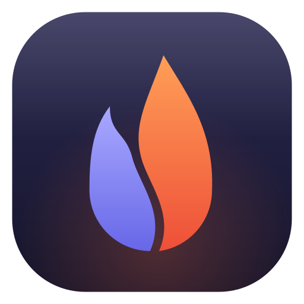
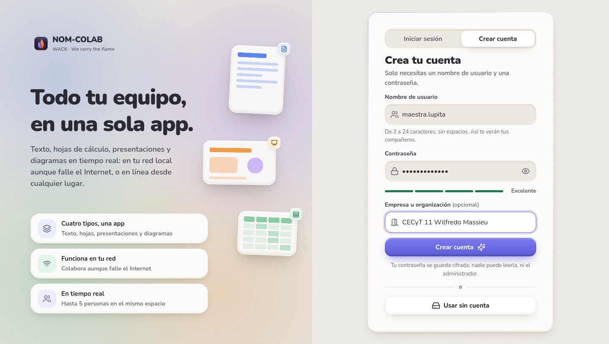
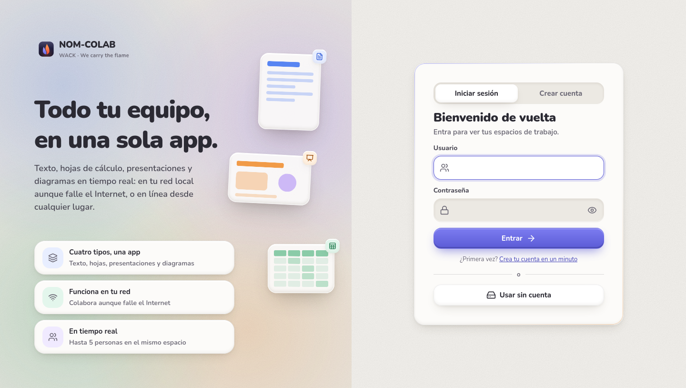
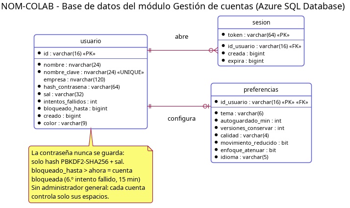
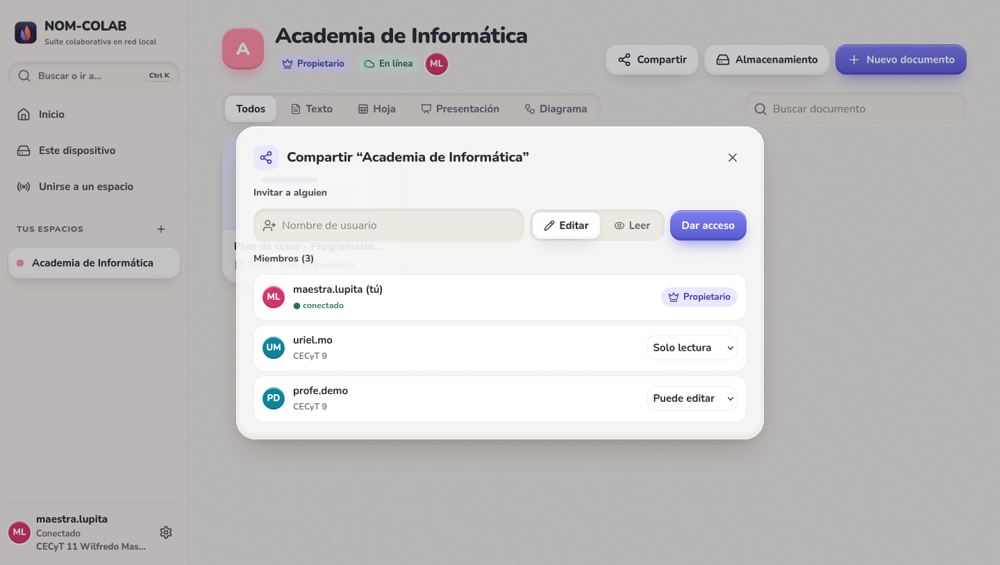
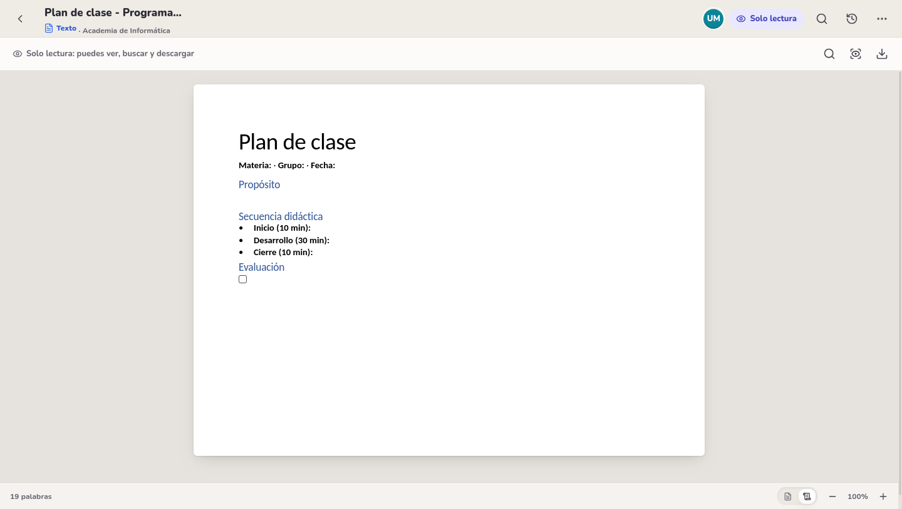

Instituto Politécnico Nacional
CECyT 9 “Juan de Dios Bátiz”

Programación Web · Entrega del módulo
NOM-COLAB: módulo web conectado a la base de datos, publicado en Azure y protegido con roles
Gestión de cuentas: registro, inicio de sesión y seguridad con roles en la base de datos y en la aplicación

Equipo 6 “WACK” · 5IM7
We carry the flame
Integrantes
González Azuara Arturo Leonardo
Martínez Ortega Uriel Alejandro
Rodríguez Esparza Diego Alejandro
Soria Flores Josep Aarón
Profesor: Juan Ángel Calvillo Pérez
Página: https://nomcolab-wack.azurewebsites.net
Fecha: 23 de octubre de 2026
1. Lo que se pidió y lo que se entrega
| Requisito | Cómo se cumple |
|---|
| Un módulo de la página web | Gestión de cuentas de NOM-COLAB: registro, inicio y cierre de sesión, bloqueo por intentos fallidos y preferencias. |
| Conectado a la base de datos | Cuentas, sesiones y preferencias viven en Azure SQL Database (3 tablas). Cada consulta va a la base; nada de esto se guarda en archivos. |
| Subido a Azure | Azure App Service (Linux, Java 21, plan F1 gratuito) en nomcolab-wack.azurewebsites.net, solo por HTTPS. |
| Seguridad aplicada con roles | En dos niveles. En la base de datos, como en la práctica 7: la página no entra con el administrador, sino con el usuario nomcolab_app, que recibe sus privilegios por el rol rol_nomcolab_app (solo leer y escribir datos, nada de crear, cambiar o borrar tablas); un segundo rol, rol_nomcolab_consulta, solo lee y no ve las contraseñas. En la aplicación, cada espacio de trabajo tiene sus roles (Propietario, Puede editar, Solo lectura) y el servidor responde 403 a lo que el rol no permite. |
No existe un administrador general de la página: ninguna cuenta puede ver ni cambiar a las demás. Cada quien controla sus espacios y documentos, y el propietario de un espacio decide quién entra y con qué rol.
2. El módulo: Gestión de cuentas
NOM-COLAB es una suite colaborativa (texto, hojas de cálculo, presentaciones y diagramas) para docentes del CECyT 11. El módulo de cuentas es la puerta de entrada: sin una sesión válida no se puede ver ningún espacio ni documento.

Crear cuenta: nombre, contraseña (con medidor de fuerza) y empresa opcional.

Iniciar sesión. El mensaje de error es genérico para no revelar qué usuarios existen.
Casos de uso del módulo
| CU | Caso | Qué hace |
|---|
| CU-01 | Crear usuario | Valida nombre (3–24 caracteres) y contraseña (mín. 8), revisa que el nombre esté libre y guarda solo el hash con su sal. |
| CU-02 | Iniciar sesión | Busca la cuenta, compara el hash y crea una sesión con token y fecha de expiración. |
| CU-03 | Cerrar sesión | Borra la sesión de la base de datos; el token deja de servir. |
| CU-04 | Bloquear acceso | Al 6.º intento fallido bloquea la cuenta 15 minutos; después se desbloquea sola. |
| CU-05 | Cifrar credenciales | PBKDF2-HMAC-SHA256, 120 000 iteraciones, sal aleatoria de 16 bytes por cuenta. |
| CU-27 | Configurar preferencias | Tema, autoguardado, versiones a conservar, calidad visual y movimiento, guardados en la base. |
3. Arquitectura
Navegador · celular · app AndroidHTML, CSS y JavaScript. Solo guarda el token de sesión.
→
Azure App ServiceJava 21 + Spring Boot 4. API REST /api/cuentas, /api/espacios, /api/documentos. Filtro de sesión y revisión del rol en cada espacio.
→
Azure SQL DatabaseTablas usuario, sesion, preferencias. Conexión JDBC cifrada como nomcolab_app.
El mismo programa funciona también en una red local sin Internet: ahí usa una base de datos H2 embebida con las mismas tablas. En Azure se cambia a SQL Server solo con variables de configuración; el código es el mismo.
4. Diseño de la base de datos

Diagrama entidad-relación del módulo de cuentas en Azure SQL.
| Tabla | Para qué sirve | Llaves |
|---|
usuario | Cuenta: nombre, empresa, hash y sal de la contraseña, intentos fallidos y bloqueo. | PK id; nombre_clave único |
sesion | Sesiones abiertas: token aleatorio de 256 bits, inicio y expiración (72 h). | PK token; FK id_usuario (borrado en cascada) |
preferencias | Tema, autoguardado, versiones a conservar, calidad, movimiento. | PK/FK id_usuario |
Consulta real del repositorio
SELECT u.id, u.nombre, u.hash_contrasena, u.sal, u.intentos_fallidos, u.bloqueado_hasta,
p.tema, p.autoguardado_min, ...
FROM usuario u
LEFT JOIN preferencias p ON p.id_usuario = u.id
WHERE u.nombre_clave = ? -- parámetro: nunca se concatena texto del usuario
5. Seguridad con roles en la base de datos
Es lo mismo que la práctica 7 (usuarios y privilegios en Oracle), aplicado a Azure SQL: un usuario nuevo no puede hacer nada hasta que recibe privilegios con GRANT, y los privilegios no se dan uno por uno a cada usuario, sino que se agrupan en un rol y se asigna el rol.
| Práctica 7 (Oracle) | NOM-COLAB (Azure SQL) |
|---|
SYSTEM | nomadmin, el administrador del servidor. Solo se usa para crear y cambiar tablas; la página ya no entra con él. |
Rol BECARIO | rol_nomcolab_app: SELECT, INSERT, UPDATE y DELETE en usuario, sesion y preferencias. Ningún privilegio para crear, cambiar o borrar tablas. |
MIGUEL | nomcolab_app: el usuario con el que se conecta la página. Se crea sin privilegios propios y todo lo recibe del rol. |
ALEJANDRO, RODRIGUEZ | rol_nomcolab_consulta + usuario nomcolab_lector: solo lectura, por columnas; las de la contraseña (hash_contrasena, sal) quedan fuera. Para revisar las cuentas sin poder ver ni cambiar credenciales. |
CREATE ROLE rol_nomcolab_app;
GRANT SELECT, INSERT, UPDATE, DELETE ON dbo.usuario TO rol_nomcolab_app;
GRANT SELECT, INSERT, UPDATE, DELETE ON dbo.sesion TO rol_nomcolab_app;
GRANT SELECT, INSERT, UPDATE, DELETE ON dbo.preferencias TO rol_nomcolab_app;
CREATE ROLE rol_nomcolab_consulta;
GRANT SELECT ON dbo.usuario (id, nombre, nombre_clave, empresa, intentos_fallidos,
bloqueado_hasta, creado, color) TO rol_nomcolab_consulta;
GRANT SELECT ON dbo.preferencias TO rol_nomcolab_consulta;
CREATE USER nomcolab_app WITH PASSWORD = N'********'; -- usuarios contenidos de la base
CREATE USER nomcolab_lector WITH PASSWORD = N'********';
ALTER ROLE rol_nomcolab_app ADD MEMBER nomcolab_app; -- como GRANT BECARIO TO MIGUEL
ALTER ROLE rol_nomcolab_consulta ADD MEMBER nomcolab_lector;
El script completo es 4-CODIGO/azure/roles-bd.sql y se aplica con ./desplegar.sh roles: migra las tablas con el administrador, crea los roles y los usuarios, prueba los permisos y deja la Web App conectada como nomcolab_app. Las contraseñas solo están en la configuración de Azure, nunca en el código.
Comprobación en Azure SQL (salida real de ./desplegar.sh roles, 23 de octubre de 2026)
| Quién | Intenta | Resultado |
|---|
| usuario sin rol | SELECT COUNT(*) FROM dbo.usuario | negado (error 229), como ORA-01031 |
| nomcolab_app | SELECT, UPDATE y DELETE sobre sus tablas | permitido |
| nomcolab_app | CREATE TABLE dbo.prueba_roles | negado (error 262) |
| nomcolab_app | ALTER TABLE dbo.usuario ADD … | negado (error 1088) |
| nomcolab_app | DROP TABLE dbo.sesion | negado (error 3701) |
| nomcolab_app | Arranque de la página (schema-sqlserver.sql) | arranca: las tablas ya existen |
| nomcolab_lector | SELECT nombre, empresa, creado FROM dbo.usuario | permitido |
| nomcolab_lector | SELECT hash_contrasena FROM dbo.usuario o SELECT * | negado (error 230, por columna) |
| nomcolab_lector | SELECT … FROM dbo.sesion · UPDATE dbo.usuario | negado (error 229) |
Con la página conectada como nomcolab_app se probó además el flujo completo contra Azure SQL: inicio de sesión, lectura de la cuenta, guardar preferencias y cierre de sesión funcionan; si alguien se apoderara de esa conexión, no podría borrar ni alterar las tablas.
6. Roles dentro de la aplicación: cada espacio de trabajo
Una vez dentro, lo que cada cuenta puede hacer depende del rol que tiene en cada espacio. El servidor lo revisa en cada petición (ServicioEspacios.exigir), así que no basta con esconder un botón en la interfaz.
| Acción | Sin sesión | Sin acceso al espacio | Solo lectura | Puede editar | Propietario |
|---|
| Abrir el espacio y sus documentos | 401 | 403 | Sí | Sí | Sí |
| Descargar un documento | 401 | 403 | Sí | Sí | Sí |
| Escribir, crear o borrar documentos | 401 | 403 | 403 | Sí | Sí |
| Invitar, cambiar el rol o quitar el acceso a alguien | 401 | 403 | 403 | 403 | Sí |
| Renombrar el espacio, activar la conexión en la red, liberar almacenamiento | 401 | 403 | 403 | 403 | Sí |

El propietario ve a los miembros y cambia su rol (Puede editar / Solo lectura) o les quita el acceso; quien sale se desconecta al instante.

Con Solo lectura el documento se abre, pero la barra solo deja buscar, enfocar y descargar; si se intenta escribir por la API, el servidor responde 403.
Permiso exigir(Espacio e, Usuario u, Permiso minimo) {
Permiso p = e.permisoDe(u.id);
if (p == null) throw ErrorNom.prohibido("No tienes acceso a este espacio"); // → 403
if (!p.alMenos(minimo)) throw ErrorNom.prohibido(switch (minimo) {
case PROPIETARIO -> "Solo el propietario puede hacer esto";
case EDICION -> "Tu permiso es de solo lectura";
default -> "No tienes acceso a este espacio";
});
return p;
}
FiltroSesion va antes: revisa el token de cada petición a /api/** (salvo registro e inicio de sesión). Sin token, o con uno vencido o inventado, responde 401.
7. Otras medidas de seguridad
| Medida | Detalle |
|---|
| Contraseñas | Nunca se guardan: solo el hash PBKDF2-HMAC-SHA256 (120 000 iteraciones) con sal propia de cada cuenta. Comparación en tiempo constante. |
| Inyección SQL | Todas las consultas usan parámetros (?) con JdbcClient; el texto del usuario nunca se concatena al SQL. |
| Validación de datos | Nombre de 3–24 letras, números, punto o guion (rechaza HTML y scripts); contraseña de 8 caracteres mínimo. |
| Fuerza bruta | Bloqueo de 15 minutos al 6.º intento; el mensaje de error no revela si el usuario existe. |
| Sesiones | Token aleatorio de 256 bits, guardado en la BD, con expiración de 72 h; al cerrar sesión se borra. |
| Mínimo privilegio en la BD | La página entra como nomcolab_app (sección 5); el administrador del servidor solo se usa para cambiar tablas. |
| Secretos fuera del código | URL, usuario y contraseña de la BD son App settings de la Web App (variables de entorno). |
| Transporte cifrado | La página solo acepta HTTPS (HTTP redirige con 301) y la conexión a la BD usa encrypt=true. |
| Red de Azure SQL | Solo acepta servicios de Azure y la IP del equipo de desarrollo, y cuando la página no se usa el acceso desde internet queda cerrado por completo (nomcolab azure down). |
| Datos locales por cuenta | Las copias que el navegador guarda para trabajar sin red se cifran con la contraseña de cada cuenta: otra persona en el mismo equipo no puede leerlas. |
8. Despliegue en Azure
Se siguió el mismo camino de la práctica 4 (Git y Azure con la CLI az), pero ahora con un servidor Java y una base de datos. La suscripción Azure for Students del IPN solo permite ciertas regiones; se usó westus.
| Recurso | Nombre | Plan y costo |
|---|
| Grupo de recursos | rg-nomcolab | — |
| Servidor y BD | nomcolab-sql-6a073f / nomcolab | Serverless, oferta gratuita: $0. Si se agota el mes, se pausa (no cobra). |
| Plan de App Service | plan-nomcolab | Linux F1 Free: $0 |
| Web App | nomcolab-wack | Java 21, solo HTTPS |
az login --use-device-code # cuenta @alumno.ipn.mx con MFA
cd 4-CODIGO/azure
export SQLPASS='********'
./desplegar.sh crear # grupo, servidor y base gratuita, firewall, plan F1, Web App Java 21,
# solo HTTPS y variables de configuración
export APP_PASS='********' LECTOR_PASS='********'
./desplegar.sh roles # tablas, roles y usuarios de la base; la página pasa a nomcolab_app
./desplegar.sh subir # compila y sube el jar (también lo hace GitHub Actions al subir a main)
Al arrancar, la aplicación revisa las tablas (schema-sqlserver.sql, idempotente): como ya existen, no intenta crear nada, y por eso puede correr con un usuario sin privilegios de estructura. Para no gastar, la página se prende solo cuando se usa: nomcolab azure up abre la base y despierta la página; nomcolab azure down la apaga y cierra la base.
9. Pruebas de seguridad
Peticiones directas a la API contra el servidor (20 de 20 aprobadas), más la comprobación de roles de la base en Azure SQL de la sección 5 (15 de 15).
| Prueba | Esperado | Resultado |
|---|
| Pedir datos sin token | 401 | Aprobada |
| Token inventado | 401 | Aprobada |
Inyección SQL en el inicio de sesión (' OR 1=1 --) | 401 | Aprobada |
| Registro con HTML en el nombre | 400 | Aprobada |
| Contraseña de menos de 8 caracteres | 400 | Aprobada |
| 6 intentos fallidos bloquean la cuenta; ni con la contraseña correcta entra | 423 | Aprobada |
| Cerrar sesión invalida el token | 401 | Aprobada |
| Cuenta sin acceso abre un espacio o un documento ajeno | 403 | Aprobada |
| Solo lectura abre el documento / intenta escribir | 200 / 403 | Aprobada |
| Puede editar escribe / intenta dar acceso a otra cuenta | 200 / 403 | Aprobada |
| El propietario baja a alguien a solo lectura: su siguiente cambio se rechaza | 403 | Aprobada |
| El propietario quita el acceso: ya no puede abrir el espacio | 403 | Aprobada |
| Nadie puede quitarle el espacio a su propietario | 400 | Aprobada |
La página entra a Azure SQL como nomcolab_app: sesión, preferencias y cierre | 200 | Aprobada |
nomcolab_app intenta crear, cambiar o borrar tablas | negado | Aprobada |
nomcolab_lector intenta leer contraseñas o escribir | negado | Aprobada |
| HTTP redirige a HTTPS | 301 | Aprobada |
10. Cómo probarlo
- Prender la página unos minutos antes (
nomcolab azure up): el plan gratuito se duerme y la primera entrada tarda hasta un minuto; el botón dice “Conectando con la base de datos…”.
- Crear dos cuentas (por ejemplo una en la computadora y otra en el celular). Con la primera, crear un espacio y un documento, y en Compartir dar a la segunda Solo lectura.
- Con la segunda cuenta el documento se abre, pero no se puede escribir. El propietario la cambia a Puede editar y ya escribe; con Quitar acceso sale del espacio al instante.
- Los roles de la base de datos se comprueban con
./desplegar.sh roles, que imprime la tabla de la sección 5.
11. Conclusión
El módulo de Gestión de cuentas de NOM-COLAB está publicado en Azure, conectado a Azure SQL Database y protegido con roles en dos niveles. En la base de datos, como en la práctica 7, la página entra con un usuario que recibe sus privilegios por un rol y no puede tocar la estructura de las tablas, y un rol de consulta deja revisar las cuentas sin ver las contraseñas. En la aplicación, los roles de cada espacio (Propietario, Puede editar, Solo lectura) se revisan en el servidor en cada petición. No hay un administrador que pueda ver las cuentas de los demás. Todo corre en servicios gratuitos de la suscripción de estudiante, sin costo.